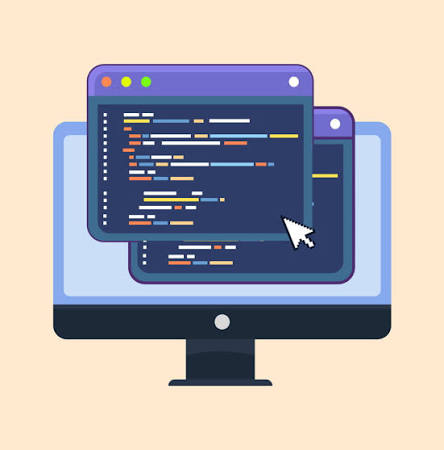

Sobre la materia
En esta página reuní algunos de los temas que hemos visto en Programación Aplicada y varias de las prácticas que he realizado. También dejé los enlaces para consultar los códigos y trabajos completos.

Temas que hemos trabajado
HTML
Empezamos con la estructura básica de una página web. Practicamos cómo usar títulos y párrafos, agregar enlaces e imágenes, y organizar información con listas, tablas, formularios y contenedores.
Análisis de datos con Python
En una de las tareas usamos Pandas para trabajar con un archivo de datos de frutas. El programa permite buscar por tipo o color, filtrar por precios, calcular promedios y consultar algunas estadísticas.
Perceptrones
También trabajamos con perceptrones, que son modelos sencillos que pueden aprender a dar una salida a partir de varias entradas. En los ejercicios usamos pesos, un sesgo y una regla de aprendizaje para resolver las compuertas AND y OR. Además, hicimos un ejercicio de tres entradas en C++ y revisamos cómo iban cambiando sus pesos.
Prácticas con ESP32
En los laboratorios usamos la ESP32 para trabajar con sus pines y controlar componentes. Estas son algunas de las prácticas que he realizado:
Encendido y parpadeo de un LED
En los primeros ejercicios encendimos y apagamos un LED desde la tarjeta. Después hicimos que parpadeara continuamente usando pausas de tiempo entre cada cambio.
Control del brillo con un potenciómetro
En otra práctica usamos MicroPython, un potenciómetro y un LED. La ESP32 lee el valor del potenciómetro y lo utiliza para cambiar la intensidad del LED.
Perceptrón en la ESP32
Para las compuertas AND y OR usamos interruptores como entradas y LEDs para mostrar el resultado. El programa primero entrena el perceptrón y luego permite cambiar las entradas manualmente para comprobar qué salida produce.
En el repositorio del profesor también hay un ejemplo de conexión Wi-Fi con la ESP32 para controlar dos LEDs desde una página web.
Mis trabajos
En este repositorio están organizadas mis tareas y las prácticas que he ido realizando durante el semestre.
Abrir mi repositorio de GitHub
Laboratorios
- Laboratorio 1: encendido y apagado del LED
- Laboratorio 2: parpadeo del LED
- Laboratorio 3: potenciómetro y brillo del LED
Tareas y perceptrones
- Tarea 4: análisis de datos con Pandas
- Perceptrón para la compuerta AND
- Perceptrón para la compuerta OR
- Perceptrón de tres entradas en C++
Actividades en Google Colab
Estos son los tres cuadernos que he trabajado en Colab:
Otros ejercicios de neuronas
También dejé los dos ejercicios de neuronas que trabajé en Kaggle:
Material de clase
Este es el repositorio que hemos usado para revisar los ejemplos de HTML, como títulos, textos, imágenes, enlaces, listas, tablas y formularios.